One image + one prompt each. The characters' action sheets are in the cast above; their costume kits are on the character kits page.
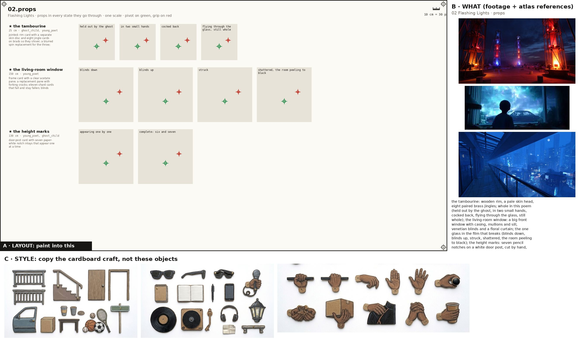
Props, every state props
Paint one sheet of cut-out puppet parts for a paper-puppet film, using the attached image. Panel A is the exact layout, panel B is our footage for these props (reference: copy the object, not the photo style), panel C is the style. STYLE (panel C): flat cards cut from corrugated cardboard, gouache with confident ink linework, the flutes faintly showing through the paint, a thin raw kraft-brown cut edge round every card, brass split-pin brads; shot flat-on, even light, no shadows, no perspective. Copy the craft from C, not the clothes in it. WHAT (panel B): the props of the poem 'Flashing Lights', one row each, every state of a prop in its own cell, left to right: the tambourine: wooden rim, a pale skin head, eight paired brass jingles; whole in this poem (held out by the ghost, in two small hands, cocked back, flying through the glass, still whole); the living-room window: a big front window with casing, mullions and sill, venetian blinds and a floral curtain; the one glass in the film that breaks (blinds down, blinds up, struck, shattered, the room peeling to black); the height marks: seven pencil notches on a white door post, cut by hand, slightly kinked (No still in the index fits; designed from the treatment and the world module.) (appearing one by one, complete: six and seven); the mirror: full-length standing mirror, dark frame, a clock seen only in its glass (dark, his hand flat on it, met by its own); the engagement rings: two plain gold rings (No still in the index fits; designed from the treatment and the world module.) (approaching, never touching, on the sill, sliding apart); the phone: smartphone face-up on the sheets, screen glowing (No still in the index fits; designed from the treatment and the world module.) (dark, ringing twice); the family car: 1990s sedan, headlights and amber hazards (cresting the bumps, idling, dome light on, rolling down the road, hazards flashing); blinds and cord: white venetian slats and a pull cord (No still in the index fits; designed from the treatment and the world module.) (down, lifting from the bottom, all the way up); the Tide Office notice: a small white enamel plate on the lamppost by the curb: two lines, the next two gates and their heights (dark, headlit). Paint each state as a flat cardboard prop card at the size its cell gives, the same object across its row; a brass brad on the green cross (its pivot); where there is a red cross, that is where a hand grips it. LAYOUT (panel A): paint one card inside each grey ghost, in the same place, size and angle, inside its dashed outline; a brass brad exactly on every green cross; each red cross must fall inside that card's rounded end. NEVER draw a pelvis, hip, shorts or briefs card (the thighs end in a rounded seat that tucks under the hem), a sleeveless vest, lace-up boots, or sunglasses painted onto a head. OUTPUT: only the painted cards on a pure white 2048x1152 sheet laid out as panel A. Leave out panels B and C, the crosses, labels, ruler, dashed lines and ghosts.
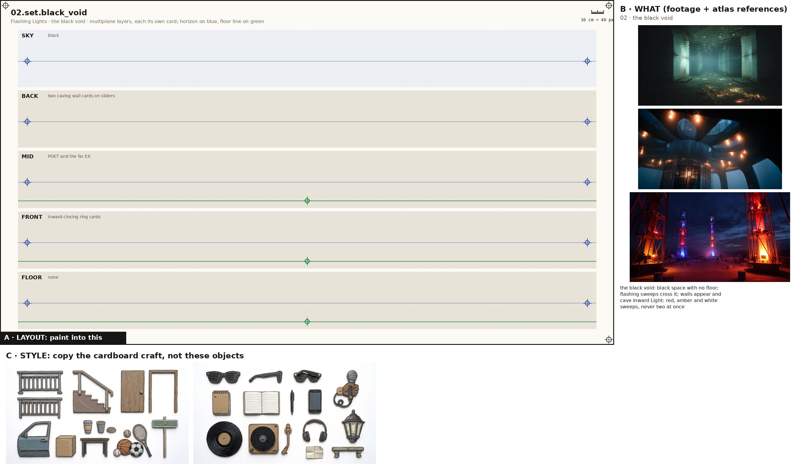
the black void set
Paint one sheet of cut-out puppet parts for a paper-puppet film, using the attached image. Panel A is the exact layout, panel B is our footage for this place (reference: copy the place, not the photo style), panel C is the style. STYLE (panel C): flat cards cut from corrugated cardboard, gouache with confident ink linework, the flutes faintly showing through the paint, a thin raw kraft-brown cut edge round every card, brass split-pin brads; shot flat-on, even light, no shadows, no perspective. Copy the craft from C, not the clothes in it. WHAT (panel B): the black void: black space with no floor; flashing sweeps cross it; walls appear and cave inward Light: red, amber and white sweeps, never two at once. SHEET: the place as five separate flat cardboard layers, one per band, painted to stack front to back in a multiplane rig: SKY: black; BACK: two caving wall cards on sliders; MID: POET and the far EX; FRONT: inward-closing ring cards; FLOOR: none. Each layer is its own card with a clean cut top edge and transparent gaps where the layer behind shows through; keep the horizon on the blue line and the floor on the green line in every band so they register. LAYOUT (panel A): paint one card inside each grey ghost, in the same place, size and angle, inside its dashed outline; a brass brad exactly on every green cross; each red cross must fall inside that card's rounded end. OUTPUT: only the painted cards on a pure white 2048x1152 sheet laid out as panel A. Leave out panels B and C, the crosses, labels, ruler, dashed lines and ghosts.
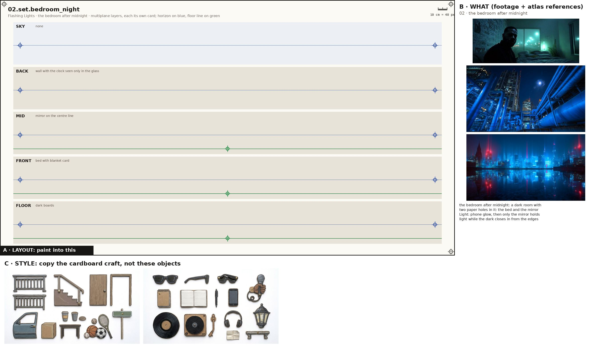
the bedroom after midnight set
Paint one sheet of cut-out puppet parts for a paper-puppet film, using the attached image. Panel A is the exact layout, panel B is our footage for this place (reference: copy the place, not the photo style), panel C is the style. STYLE (panel C): flat cards cut from corrugated cardboard, gouache with confident ink linework, the flutes faintly showing through the paint, a thin raw kraft-brown cut edge round every card, brass split-pin brads; shot flat-on, even light, no shadows, no perspective. Copy the craft from C, not the clothes in it. WHAT (panel B): the bedroom after midnight: a dark room with two paper holes in it: the bed and the mirror Light: phone glow, then only the mirror holds light while the dark closes in from the edges. SHEET: the place as five separate flat cardboard layers, one per band, painted to stack front to back in a multiplane rig: SKY: none; BACK: wall with the clock seen only in the glass; MID: mirror on the centre line; FRONT: bed with blanket card; FLOOR: dark boards. Each layer is its own card with a clean cut top edge and transparent gaps where the layer behind shows through; keep the horizon on the blue line and the floor on the green line in every band so they register. LAYOUT (panel A): paint one card inside each grey ghost, in the same place, size and angle, inside its dashed outline; a brass brad exactly on every green cross; each red cross must fall inside that card's rounded end. OUTPUT: only the painted cards on a pure white 2048x1152 sheet laid out as panel A. Leave out panels B and C, the crosses, labels, ruler, dashed lines and ghosts.
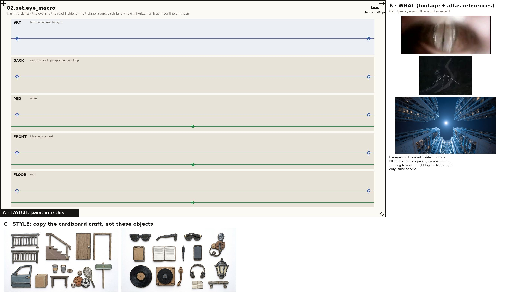
the eye and the road inside it set
Paint one sheet of cut-out puppet parts for a paper-puppet film, using the attached image. Panel A is the exact layout, panel B is our footage for this place (reference: copy the place, not the photo style), panel C is the style. STYLE (panel C): flat cards cut from corrugated cardboard, gouache with confident ink linework, the flutes faintly showing through the paint, a thin raw kraft-brown cut edge round every card, brass split-pin brads; shot flat-on, even light, no shadows, no perspective. Copy the craft from C, not the clothes in it. WHAT (panel B): the eye and the road inside it: an iris filling the frame, opening on a night road winding to one far light Light: the far light only, suite accent. SHEET: the place as five separate flat cardboard layers, one per band, painted to stack front to back in a multiplane rig: SKY: horizon line and far light; BACK: road dashes in perspective on a loop; MID: none; FRONT: iris aperture card; FLOOR: road. Each layer is its own card with a clean cut top edge and transparent gaps where the layer behind shows through; keep the horizon on the blue line and the floor on the green line in every band so they register. LAYOUT (panel A): paint one card inside each grey ghost, in the same place, size and angle, inside its dashed outline; a brass brad exactly on every green cross; each red cross must fall inside that card's rounded end. OUTPUT: only the painted cards on a pure white 2048x1152 sheet laid out as panel A. Leave out panels B and C, the crosses, labels, ruler, dashed lines and ghosts.
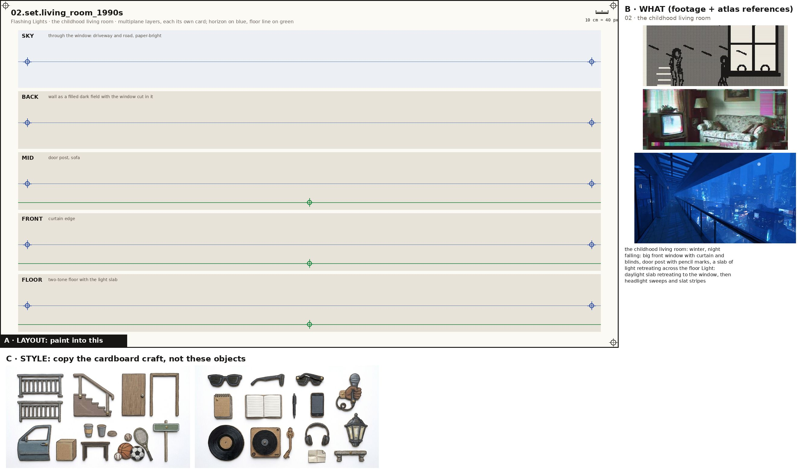
the childhood living room set
Paint one sheet of cut-out puppet parts for a paper-puppet film, using the attached image. Panel A is the exact layout, panel B is our footage for this place (reference: copy the place, not the photo style), panel C is the style. STYLE (panel C): flat cards cut from corrugated cardboard, gouache with confident ink linework, the flutes faintly showing through the paint, a thin raw kraft-brown cut edge round every card, brass split-pin brads; shot flat-on, even light, no shadows, no perspective. Copy the craft from C, not the clothes in it. WHAT (panel B): the childhood living room: winter, night falling: big front window with curtain and blinds, door post with pencil marks, a slab of light retreating across the floor Light: daylight slab retreating to the window, then headlight sweeps and slat stripes. SHEET: the place as five separate flat cardboard layers, one per band, painted to stack front to back in a multiplane rig: SKY: through the window: driveway and road, paper-bright; BACK: wall as a filled dark field with the window cut in it; MID: door post, sofa; FRONT: curtain edge; FLOOR: two-tone floor with the light slab. Each layer is its own card with a clean cut top edge and transparent gaps where the layer behind shows through; keep the horizon on the blue line and the floor on the green line in every band so they register. LAYOUT (panel A): paint one card inside each grey ghost, in the same place, size and angle, inside its dashed outline; a brass brad exactly on every green cross; each red cross must fall inside that card's rounded end. OUTPUT: only the painted cards on a pure white 2048x1152 sheet laid out as panel A. Leave out panels B and C, the crosses, labels, ruler, dashed lines and ghosts.
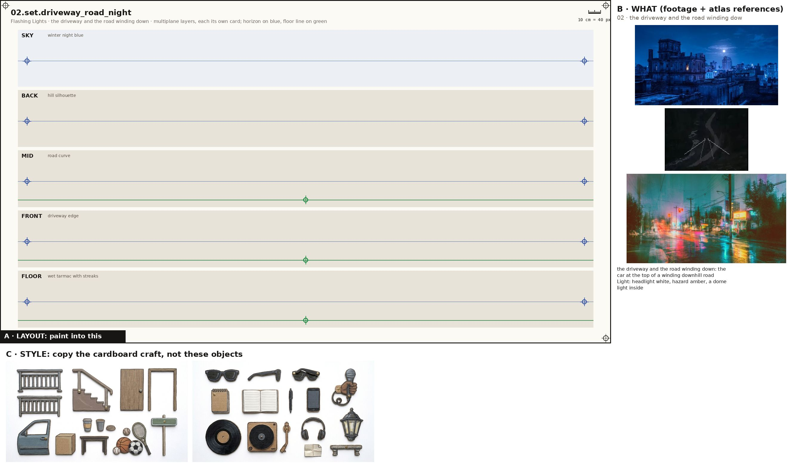
the driveway and the road winding down set
Paint one sheet of cut-out puppet parts for a paper-puppet film, using the attached image. Panel A is the exact layout, panel B is our footage for this place (reference: copy the place, not the photo style), panel C is the style. STYLE (panel C): flat cards cut from corrugated cardboard, gouache with confident ink linework, the flutes faintly showing through the paint, a thin raw kraft-brown cut edge round every card, brass split-pin brads; shot flat-on, even light, no shadows, no perspective. Copy the craft from C, not the clothes in it. WHAT (panel B): the driveway and the road winding down: the car at the top of a winding downhill road Light: headlight white, hazard amber, a dome light inside. SHEET: the place as five separate flat cardboard layers, one per band, painted to stack front to back in a multiplane rig: SKY: winter night blue; BACK: hill silhouette; MID: road curve; FRONT: driveway edge; FLOOR: wet tarmac with streaks. Each layer is its own card with a clean cut top edge and transparent gaps where the layer behind shows through; keep the horizon on the blue line and the floor on the green line in every band so they register. LAYOUT (panel A): paint one card inside each grey ghost, in the same place, size and angle, inside its dashed outline; a brass brad exactly on every green cross; each red cross must fall inside that card's rounded end. OUTPUT: only the painted cards on a pure white 2048x1152 sheet laid out as panel A. Leave out panels B and C, the crosses, labels, ruler, dashed lines and ghosts.
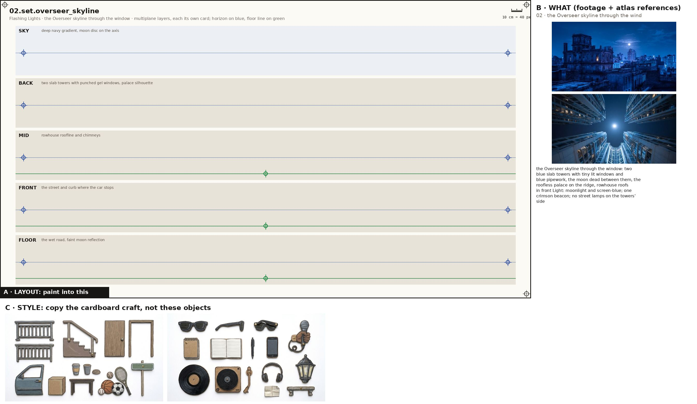
the Overseer skyline through the window set
Paint one sheet of cut-out puppet parts for a paper-puppet film, using the attached image. Panel A is the exact layout, panel B is our footage for this place (reference: copy the place, not the photo style), panel C is the style. STYLE (panel C): flat cards cut from corrugated cardboard, gouache with confident ink linework, the flutes faintly showing through the paint, a thin raw kraft-brown cut edge round every card, brass split-pin brads; shot flat-on, even light, no shadows, no perspective. Copy the craft from C, not the clothes in it. WHAT (panel B): the Overseer skyline through the window: two blue slab towers with tiny lit windows and blue pipework, the moon dead between them, the roofless palace on the ridge, rowhouse roofs in front Light: moonlight and screen-blue; one crimson beacon; no street lamps on the towers' side. SHEET: the place as five separate flat cardboard layers, one per band, painted to stack front to back in a multiplane rig: SKY: deep navy gradient, moon disc on the axis; BACK: two slab towers with punched gel windows, palace silhouette; MID: rowhouse roofline and chimneys; FRONT: the street and curb where the car stops; FLOOR: the wet road, faint moon reflection. Each layer is its own card with a clean cut top edge and transparent gaps where the layer behind shows through; keep the horizon on the blue line and the floor on the green line in every band so they register. LAYOUT (panel A): paint one card inside each grey ghost, in the same place, size and angle, inside its dashed outline; a brass brad exactly on every green cross; each red cross must fall inside that card's rounded end. OUTPUT: only the painted cards on a pure white 2048x1152 sheet laid out as panel A. Leave out panels B and C, the crosses, labels, ruler, dashed lines and ghosts.
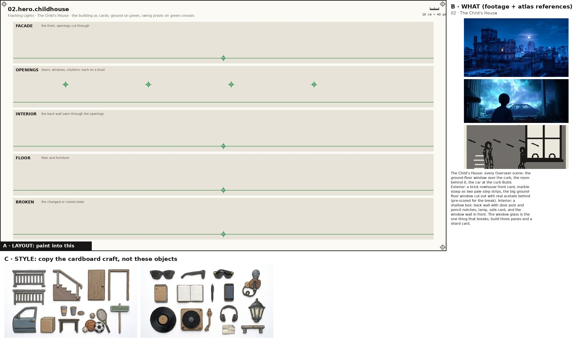
The Child's House hero
Paint one sheet of cut-out puppet parts for a paper-puppet film, using the attached image. Panel A is the exact layout, panel B is the atlas reference for this building (copy the building, not the photo style), panel C is the style. STYLE (panel C): flat cards cut from corrugated cardboard, gouache with confident ink linework, the flutes faintly showing through the paint, a thin raw kraft-brown cut edge round every card, brass split-pin brads; shot flat-on, even light, no shadows, no perspective. Copy the craft from C, not the clothes in it. WHAT (panel B): The Child's House: every Overseer scene: the ground-floor window over the curb, the room behind it, the car at the curb Build: Exterior: a brick rowhouse front card, marble stoop as two pale step strips, the big ground-floor window cut out with real acetate behind (pre-scored for the break). Interior: a shallow box: back wall with door post and pencil notches, lamp, sofa card, and the window wall in front. The window glass is the one thing that breaks; build three panes and a shard card.. SHEET: the building as separate flat cardboard cards, one per band: the FACADE with its window and door holes cut clean through; the OPENINGS (doors, shutters, windows) as their own cards on a brass brad at the green cross so they swing; the INTERIOR back wall seen through the openings; the FLOOR and furniture; and its BROKEN or changed state where the poem has one. Keep the ground on the green line in every band so the cards register. LAYOUT (panel A): paint one card inside each grey ghost, in the same place, size and angle, inside its dashed outline; a brass brad exactly on every green cross; each red cross must fall inside that card's rounded end. OUTPUT: only the painted cards on a pure white 2048x1152 sheet laid out as panel A. Leave out panels B and C, the crosses, labels, ruler, dashed lines and ghosts. No people on this sheet.
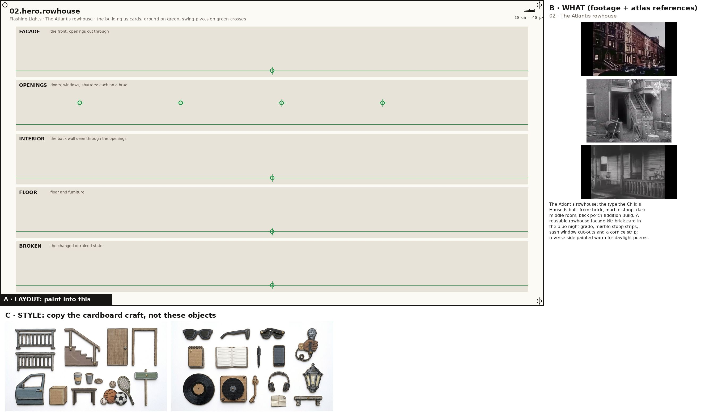
The Atlantis rowhouse hero
Paint one sheet of cut-out puppet parts for a paper-puppet film, using the attached image. Panel A is the exact layout, panel B is the atlas reference for this building (copy the building, not the photo style), panel C is the style. STYLE (panel C): flat cards cut from corrugated cardboard, gouache with confident ink linework, the flutes faintly showing through the paint, a thin raw kraft-brown cut edge round every card, brass split-pin brads; shot flat-on, even light, no shadows, no perspective. Copy the craft from C, not the clothes in it. WHAT (panel B): The Atlantis rowhouse: the type the Child's House is built from: brick, marble stoop, dark middle room, back porch addition Build: A reusable rowhouse facade kit: brick card in the blue night grade, marble stoop strips, sash window cut-outs and a cornice strip; reverse side painted warm for daylight poems.. SHEET: the building as separate flat cardboard cards, one per band: the FACADE with its window and door holes cut clean through; the OPENINGS (doors, shutters, windows) as their own cards on a brass brad at the green cross so they swing; the INTERIOR back wall seen through the openings; the FLOOR and furniture; and its BROKEN or changed state where the poem has one. Keep the ground on the green line in every band so the cards register. LAYOUT (panel A): paint one card inside each grey ghost, in the same place, size and angle, inside its dashed outline; a brass brad exactly on every green cross; each red cross must fall inside that card's rounded end. OUTPUT: only the painted cards on a pure white 2048x1152 sheet laid out as panel A. Leave out panels B and C, the crosses, labels, ruler, dashed lines and ghosts. No people on this sheet.
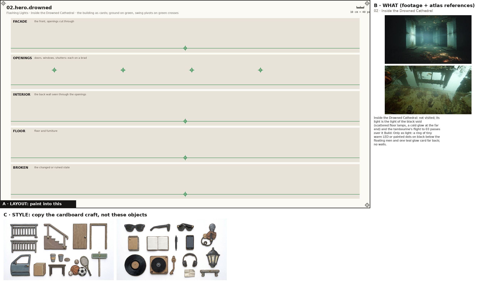
Inside the Drowned Cathedral hero
Paint one sheet of cut-out puppet parts for a paper-puppet film, using the attached image. Panel A is the exact layout, panel B is the atlas reference for this building (copy the building, not the photo style), panel C is the style. STYLE (panel C): flat cards cut from corrugated cardboard, gouache with confident ink linework, the flutes faintly showing through the paint, a thin raw kraft-brown cut edge round every card, brass split-pin brads; shot flat-on, even light, no shadows, no perspective. Copy the craft from C, not the clothes in it. WHAT (panel B): Inside the Drowned Cathedral: not visited; its light is the light of the black void (scattered floor lamps, a cold glow at the far end) and the tambourine's flight to 03 passes over it Build: Only as light: a ring of tiny warm LED or painted dots on black below the floating men and one teal glow card far back; no walls.. SHEET: the building as separate flat cardboard cards, one per band: the FACADE with its window and door holes cut clean through; the OPENINGS (doors, shutters, windows) as their own cards on a brass brad at the green cross so they swing; the INTERIOR back wall seen through the openings; the FLOOR and furniture; and its BROKEN or changed state where the poem has one. Keep the ground on the green line in every band so the cards register. LAYOUT (panel A): paint one card inside each grey ghost, in the same place, size and angle, inside its dashed outline; a brass brad exactly on every green cross; each red cross must fall inside that card's rounded end. OUTPUT: only the painted cards on a pure white 2048x1152 sheet laid out as panel A. Leave out panels B and C, the crosses, labels, ruler, dashed lines and ghosts. No people on this sheet.
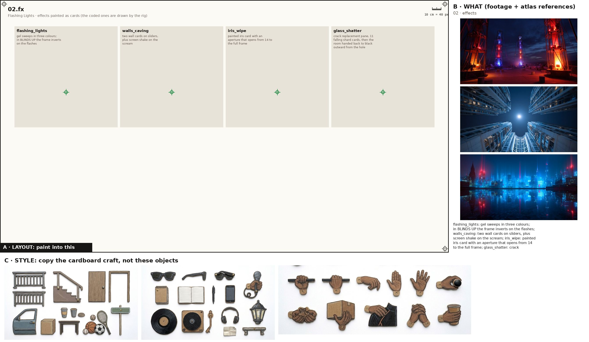
Painted effects fx
Paint one sheet of cut-out puppet parts for a paper-puppet film, using the attached image. Panel A is the exact layout, panel B is our footage for the mood, panel C is the style. STYLE (panel C): flat cards cut from corrugated cardboard, gouache with confident ink linework, the flutes faintly showing through the paint, a thin raw kraft-brown cut edge round every card, brass split-pin brads; shot flat-on, even light, no shadows, no perspective. Copy the craft from C, not the clothes in it. WHAT: the poem's painted effects, one per cell, as flat cardboard cards that a cut-out film moves in front of the camera: flashing_lights: gel sweeps in three colours; in BLINDS UP the frame inverts on the flashes; walls_caving: two wall cards on sliders, plus screen shake on the scream; iris_wipe: painted iris card with an aperture that opens from 14 to the full frame; glass_shatter: crack replacement pane, 11 falling shard cards, then the room handed back to black outward from the hole. A brass brad on the green cross of each. LAYOUT (panel A): paint one card inside each grey ghost, in the same place, size and angle, inside its dashed outline; a brass brad exactly on every green cross; each red cross must fall inside that card's rounded end. NEVER draw a pelvis, hip, shorts or briefs card (the thighs end in a rounded seat that tucks under the hem), a sleeveless vest, lace-up boots, or sunglasses painted onto a head. OUTPUT: only the painted cards on a pure white 2048x1152 sheet laid out as panel A. Leave out panels B and C, the crosses, labels, ruler, dashed lines and ghosts.